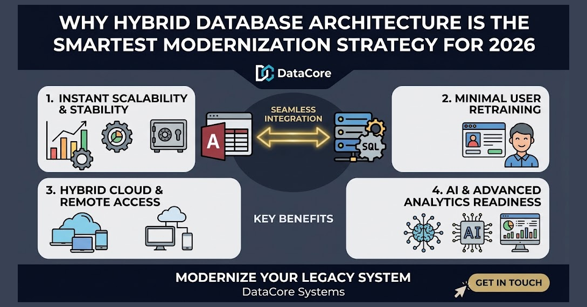

Why Hybrid Database Architecture Is the Smartest Modernization Strategy for 2026
For decades, legacy desktop databases like Microsoft Access served as the engine of daily business operations. However, as businesses grow, relying on local, file-based systems creates severe performance bottlenecks, data corruption risks, and integration roadblocks. In 2026, complete "rip-and-replace" cloud migrations often fail due to ballooning costs and business disruption. The most effective solution is a Hybrid Database Architecture—combining a familiar Microsoft Access front-end with a robust Microsoft SQL Server back-end.

Key Benefits of Hybrid Modernization
Instant Scalability & Stability: Offloading storage, complex indexing, and querying to SQL Server eliminates multi-user file lockups and prevents database corruption.
Minimal User Retraining: Employees keep using the customized Access interfaces and reports they are used to, keeping productivity uninterrupted.
Hybrid Cloud & Remote Access: Web apps and remote locations can connect directly to the central SQL Server via secure APIs or cloud connectors.
AI & Advanced Analytics Readiness: Structuring relational data in SQL Server makes enterprise reports and modern AI insights possible across historical data.
How DataCore Systems Helps
We specialize in incremental database migrations. Rather than disrupting your entire operational workflow, we safely migrate your back-end tables to SQL Server, optimize your queries, and keep your business running smoothly without missing a beat.
Looking to optimize or modernize your MS Access system? DataCore Systems specializes in Access database optimization, SQL Server backend migrations, and custom enterprise software architectures.
Get in Touch